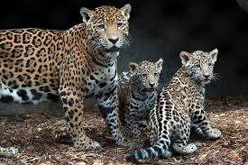
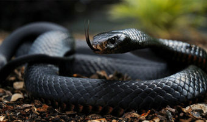

Hello my fellow readers, you will see all types of cool amimals and learn many things about thing.Animals are very significant they make the world look great.
I'm going to start off with some pictures and explanations about the animals facts and other things I believe you should know about the animal.

Jaguars are magnificent cats; they can be found in North,South,and Central America. Jaguars are the biggest cats in America and the third largest in the world.
The jaguar is about 4 to 6 feet and the tail is 2 feet long. Male jaguars can be heavier than female jaguars:
males weigh about 126 to 250 pounds and females are 100 to 200 pounds.They live in places like forest and woods or can be found in deserts in Arizona.
Jaguars are creative when it comes to catching fish, they dip their tails in the water to lure the fish in much like a fishing line. Jaguars mainly spend time with their own kind
if they're mating or taking care of their cubs. Females carry their cubs around for 100 days and they give birth to 1 to 4 cubs. The jaguars can live up to 12 years.
The population of jaguars is 15,000 that remain in the wild.
Black mamba a good looking snake, but its very dangerous. The black mamba is Africa's largest venomous snake. The snake is a brown and grey color. It is named because of the black lining around its mouth. The black mamba is one of the fastest snakes in the world. The black mamba is an agile species that hunt's warm blooded prey only.Black mambas reside in South and East Africa’s savannas, rocky hills and open woodlands.
.jpg)